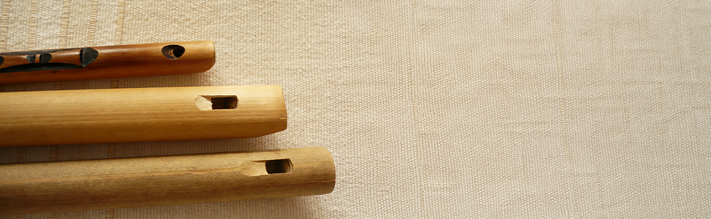
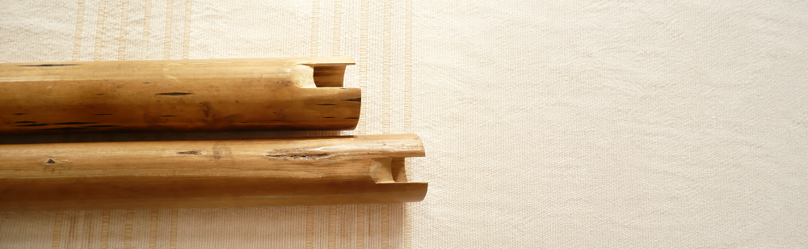
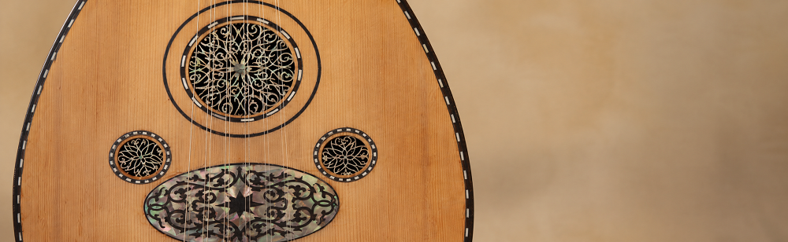

Invite Instrumentarium
Home > Invite Instrumentarium
Research-based public programs
The public and institutional programs developed through Instrumentarium can be hosted by universities, museums, libraries, archives, cultural centers, schools, festivals, community organizations, research groups, heritage projects, and institutions working with musical instruments, sound archives, collections, or material culture.
Whether presented as a lecture, lecture-demonstration, workshop, academic seminar, short course, advisory session, or field documentation residency, each program is grounded in the project's central approach: musical instruments are not only tools for producing sound, but material documents that carry histories of making, territory, custody, performance, classification, transmission, and loss.
The programs function as forms of research communication, public interpretation, and collaborative documentation. Rather than presenting instruments as musical curiosities, they use instruments, sound artifacts, archives, collections, and living practices as points of departure for structured inquiry.
Available formats
The formats below provide a concise overview of the main ways in which the public and institutional programs developed through Instrumentarium can be delivered and adapted. For a fuller catalogue of activity formats, thematic areas, and possible topics, see the activities page.
Keynote Lectures
Research-based talks for conferences, universities, museums, libraries, archives, cultural centers, and public programs. These lectures introduce key questions from Instrumentarium: musical instruments as documents, sound artifacts as carriers of memory, the limits of classification, the role of archives and museums, and the ways traditions are recorded, stabilized, transformed, or lost.
Lecture-Demonstrations
Sessions combining spoken interpretation, visual materials, and live sound. Instruments are presented not as isolated curiosities, but as objects whose construction, materials, acoustic logic, documentary traces, and cultural meanings can be examined together.
Workshops and Training Sessions
Practical sessions for professionals, students, researchers, and cultural workers involved in the study, description, interpretation, or stewardship of musical instruments and sound heritage. Workshops may address documentation methods, classification problems, metadata, collection interpretation, field organology, and the relationship between instruments, archives, and communities.
Academic Seminars
In-depth research sessions for universities, graduate programs, research groups, and specialized audiences. Seminars can focus on organology, documentation studies, archival description, musical instrument classification, cultural memory, sound archives, material culture, or the politics of musical heritage.
Short Courses
Structured multi-session programs dedicated to specific themes within musical instrument studies, traditional music, sound archives, documentation, and cultural interpretation. Short courses can be designed for academic, professional, or public educational settings.
Advisory and Consulting sessions
Collaborative work with libraries, archives, museums, cultural institutions, collections, and research teams. These sessions may include collection reviews, documentation strategies, classification assessment, metadata planning, interpretive frameworks, and support for projects involving musical instruments or sound-related materials.
Field Documentation Residencies
Collaborative visits designed to document musical instruments, sound practices, making processes, builders, performers, collections, or archival materials. These residencies may combine interviews, observation, documentation, public talks, workshops, and written or audio-visual outputs.
Suitable for
Instrumentarium programs can be adapted for:
- Universities and research centers
- Music departments and conservatories
- Museums and instrument collections
- Libraries and archives
- Cultural centers
- Schools and educational programs
- Festivals and public cultural events
- Community organizations
- Heritage projects
- Documentation initiatives
- Research groups
- Independent cultural platforms
- Institutions working with sound archives, musical heritage, or material culture
Programs may be designed for specialized academic audiences, professionals, students, cultural workers, general audiences, or mixed public settings.

Flagship programs
The following programs have been selected as representative entry points into the public and institutional work developed through Instrumentarium. Together, they reflect the project's main approaches to musical instruments as documents, sound artifacts, objects of collection, and sources of cultural knowledge. Each program is conceived as a clear, adaptable format that can be developed according to the interests, audience, and context of the host institution.
Musical Instruments as Documents
Format: Keynote Lecture / Academic Seminar
This program introduces the central proposition of Instrumentarium: musical instruments can be approached as documentary objects. Rather than treating instruments only as sound-producing devices, the session examines how they become intelligible through making, use, custody, description, classification, performance, recording, and transmission.
The lecture connects organology with Library & Information Science, Archival Studies, Museology, and cultural memory, showing how instruments store and transmit knowledge while also being shaped by institutional systems of description and interpretation.
Suitable for: universities, museums, libraries, archives, research groups, conferences, and cultural programs.
From Object to Sound
Format: Lecture-Demonstration / educational program
This program combines explanation, visual materials, and live sound to examine how musical instruments operate as material, acoustic, and documentary objects. Instruments are presented through their construction, materials, sound-producing mechanisms, historical traces, and cultural contexts.
The goal is not to display instruments as curiosities, but to show how sound emerges from material decisions, ecological conditions, technical knowledge, embodied practice, and systems of meaning.
Suitable for: museums, cultural centers, schools, libraries, universities, festivals, and public educational programs.
Documenting Sound Artifacts
Format: Workshop / Training Session
This workshop focuses on the documentation and interpretation of musical instruments and sound-related materials in collections, archives, research projects, and cultural initiatives. It addresses the practical and conceptual difficulties of describing instruments: unstable names, incomplete provenance, hybrid forms, absent makers, missing performance contexts, inadequate classification systems, and archival silences.
Participants examine how instruments can be documented beyond morphology and typology, incorporating materials, making processes, use, transmission, territorial context, institutional history, and sound-related evidence.
Suitable for: museum professionals, librarians, archivists, collection managers, students, researchers, heritage workers, and documentation teams.
Field documentation residencies
Field documentation residencies are one of the main collaborative formats of Instrumentarium. They are intended for contexts where musical instruments, sound practices, collections, or documentary materials require careful interpretation, description, or public presentation.
A residency may focus on:
- Musical instrument builders and making processes
- Performers and local sound practices
- Instrument collections in museums, archives, or private custody
- Sound archives and recorded traditions
- Materials, tools, and ecological contexts of instrument-making
- Local names, classifications, and transmission practices
- Fragmentary or poorly documented instruments
- Public interpretation of musical heritage
- Relationships between instruments, memory, territory, and institutions
Possible outputs may include:
- Public lecture
- Workshop or training session
- Documentation report
- Interview series
- Podcast episode
- Blog essay or field note
- Educational resource
- Catalog or collection notes
- Photo essay
- Collaborative publication
- Public presentation or closing session
Residencies are not designed as extractive collecting visits. They are collaborative documentation processes shaped by context, permission, institutional or community needs, and the limits of what can be responsibly recorded, interpreted, or made public.

Modes of delivery
Programs can be delivered and organized in different ways according to the needs, location, schedule, and resources of the host.
In person
Suitable for lectures, lecture-demonstrations, workshops, short courses, collection work, field documentation, and public programs involving instruments or materials.
Online
Suitable for lectures, seminars, advisory sessions, workshops, research discussions, and preparatory meetings.
Hybrid
Suitable for institutions that want to combine online preparation with in-person activities, or public events with remote participation.
Single event
A lecture, lecture-demonstration, seminar, workshop, or public program delivered as a one-time activity.
Multi-session program
A short course, seminar series, training sequence, or extended workshop developed over several meetings.
Residency
A multi-day or longer collaborative visit involving documentation, interviews, collection work, public activities, and written or audio-visual outputs.
Programs can be developed in Spanish, English, Portuguese, Italian, French, Catalan, and Galician.
Evidence of research and practice
The public and institutional programs developed through Instrumentarium are grounded in an extensive body of research, documentation, and public scholarship produced over many years. Rather than presenting preliminary ideas, they draw on published work, field research, archival investigation, critical essays, classification projects, educational resources, and ongoing documentation of musical instruments and sound cultures.
The following materials provide representative examples of that work and illustrate the conceptual, documentary, and practical foundations on which the programs are based.
- Selected books and publications
- Research articles and critical essays
- Field documentation projects
- Classification and documentation initiatives
- Podcast episodes and audio productions
- Blog essays and research notes
- Educational resources and teaching materials
- Selected public lectures and activities
- Photographic and audiovisual documentation
Together, these materials document the research trajectory behind Instrumentarium and provide evidence of the methods, questions, and public work from which its programs have emerged.
Inquiries
Institutions, organizations, cultural programs, research groups, communities, builders, musicians, and project coordinators interested in hosting or adapting an Instrumentarium activity are welcome to get in touch.
Programs can be discussed according to audience, format, duration, language, location, institutional context, available resources, and desired outputs.
For inquiries regarding availability, proposals, collaborations, or field documentation residencies, please use the contact information.